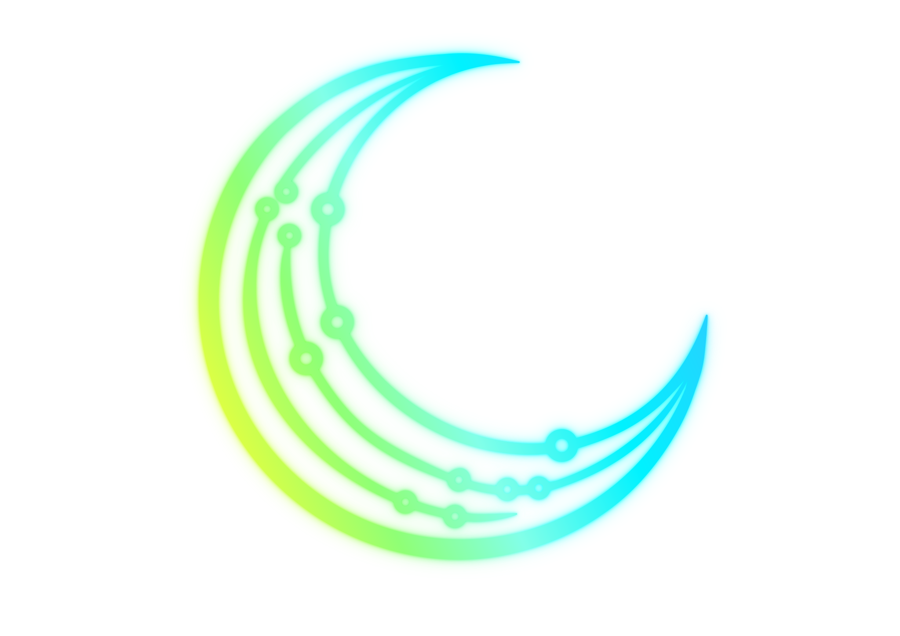

Presença digital
Experiências web com autoridade, clareza e performance para apresentar marcas, produtos e negócios com impacto.

LU SYSTEMInteligência digital
Tecnologia inteligente para decisões estratégicas. A Lu System transforma dados, processos e informações em clareza, eficiência e vantagem competitiva.
Soluções
A Lu System conecta estratégia, dados e engenharia para transformar operações em experiências digitais mais inteligentes, escaláveis e orientadas a resultado.
Experiências web com autoridade, clareza e performance para apresentar marcas, produtos e negócios com impacto.
Rotinas mais produtivas, menos esforço repetitivo e mais velocidade para operações que precisam evoluir.
Interface, conteúdo e marca trabalhando juntos para gerar confiança, posicionamento e valor percebido.
Manifesto
A tecnologia deve ser mais do que uma ferramenta. Ela deve atuar como parceira estratégica em um mundo movido por dados, velocidade e transformação constante.
Cada sistema, aplicação ou plataforma criada pela Lu System nasce com um objetivo claro: converter informações em inteligência, processos em eficiência e desafios em oportunidades.
Método Lu System
Objetivos, dados e operação ganham leitura clara para revelar prioridades reais.
Produtos digitais, automações e interfaces nascem com foco em uso, escala e resultado.
Cada entrega abre caminho para novas melhorias, mais inteligência e decisões melhores.
Sobre o fundador
Minha trajetória profissional foi construída na interseção entre negócios, finanças, dados e tecnologia. Sou graduado em Administração, pós-graduado em Ciência de Dados e atualmente pós-graduando em Engenharia de Software.
Ao longo dos anos desenvolvi experiência em gestão, governança, operações, finanças, análise de crédito e transformação de processos, atuando em ambientes de alta responsabilidade e tomada de decisão.
A Lu System nasceu da convicção de que a tecnologia deve ser mais do que ferramentas e códigos. Ela deve gerar valor, inteligência, produtividade e transformação para negócios e pessoas.
Tecnologia Inteligente para Soluções Avançadas.
Contato
A Lu System cria soluções digitais para automatizar processos, organizar informação e impulsionar decisões com mais clareza.